Aayush Upadhyay
M.Tech Structures,
Nirma University
AMPP Certified CP-2 Technician
Structural distress is often only the visible sign of a deeper problem. StructoNova studies the cause, measures the extent of deterioration and recommends solutions that restore performance, improve durability and reduce the risk of repeated failure.


StructoNova Pvt. Ltd. integrates the legacy, talent and technical depth of its parent firms to deliver robust and practical structural solutions for existing buildings and infrastructure.
Our strength lies in bringing together engineering judgment and site practicality to create repair solutions that are technically sound, execution-ready and focused on long-term performance.
M.Tech Structures,
Nirma University
AMPP Certified CP-2 Technician
ME Structures,
DDIT Nadiad
M.Tech Infrastructure Engineering & Management,
CEPT University
M Tech. Structural Dynamics,
IIT Roorkee
BE Civil,
Gujarat Technical University
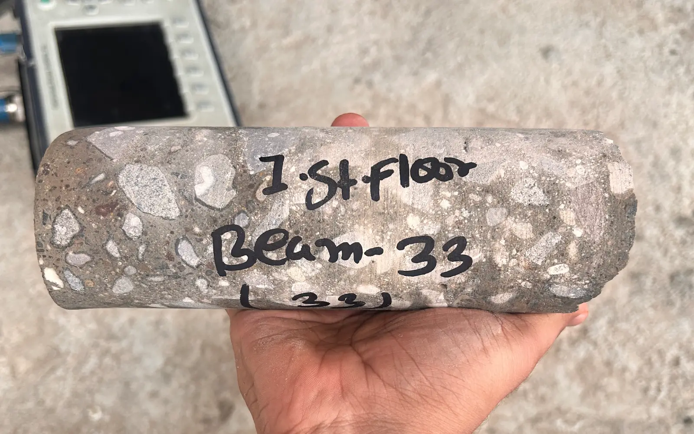
On-site and laboratory testing selected to establish material condition, performance and the extent of deterioration.
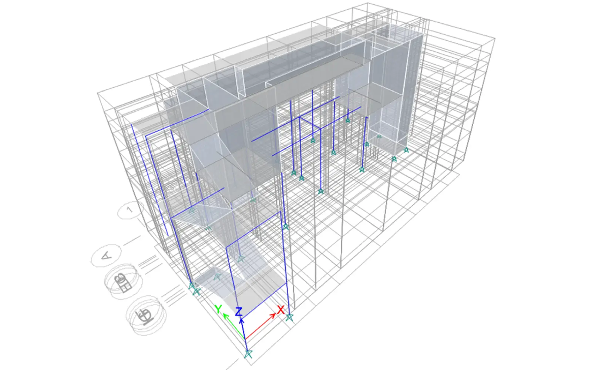
Engineering assessment and analysis used to understand structural behaviour, capacity and the need for intervention.
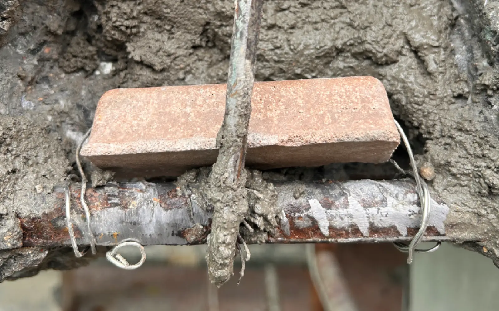
Design, installation and monitoring of corrosion-control systems for reinforced concrete structures.
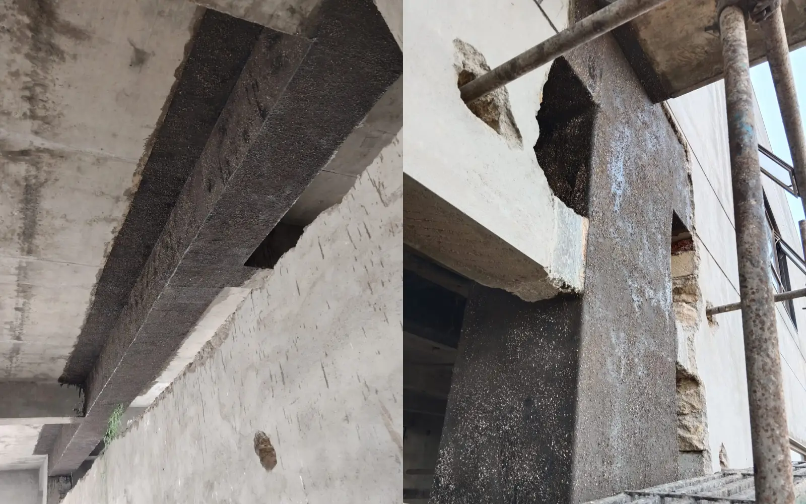
Fibre-reinforced polymer strengthening systems for beams, slabs, columns, walls and structural connections.
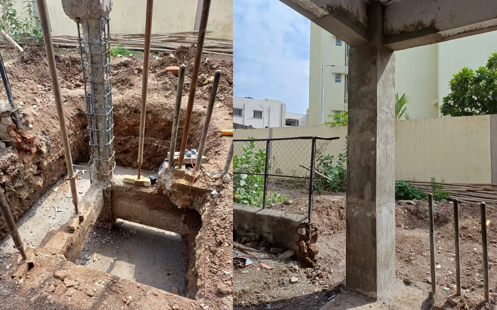
Section enlargement and strengthening of structural members using flowable micro-concrete systems.
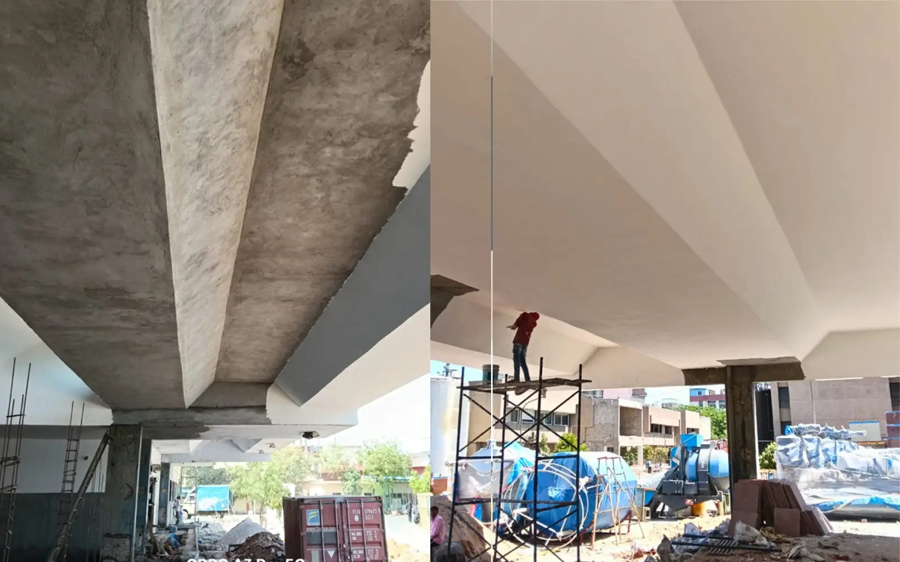
Durable local repairs for damaged concrete, cover restoration and surface reinstatement.
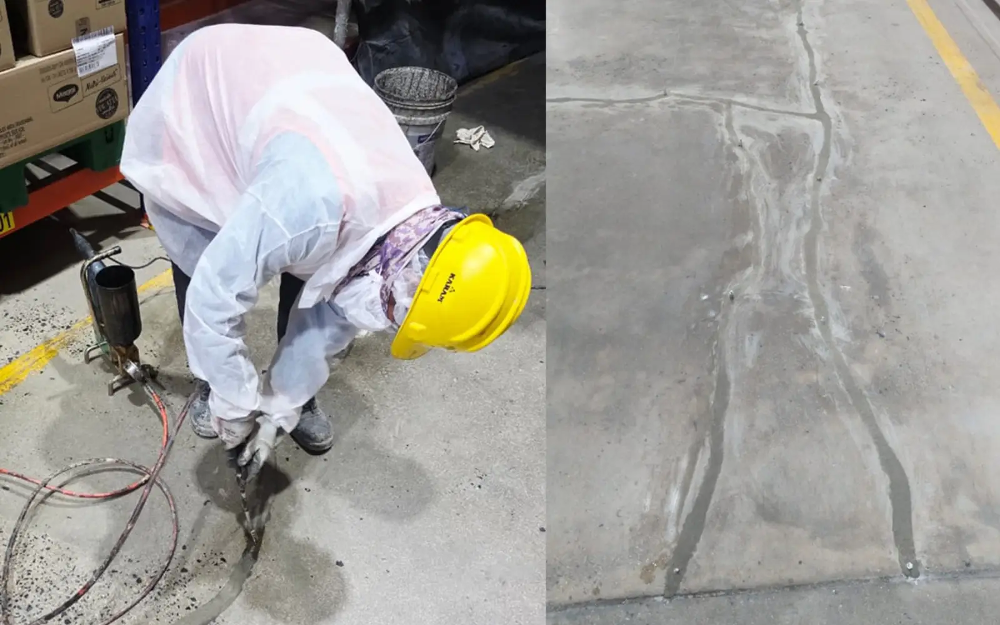
PU, epoxy and acrylate grouting, together with crack sealing and repair.
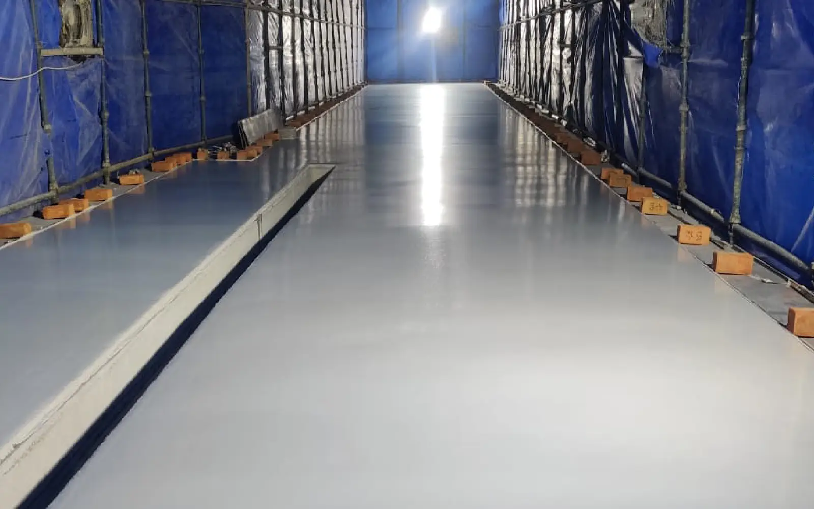
PU, epoxy, Xolutec and specialised waterproofing systems selected for service conditions.
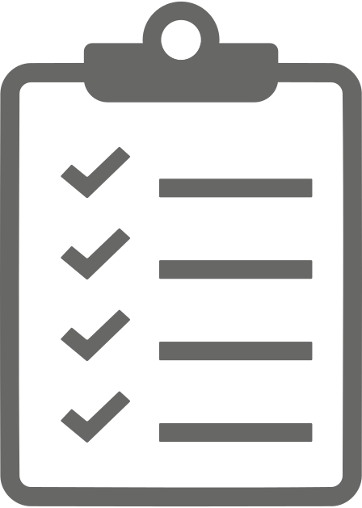
Understand the structure, available records, reported concerns and required outcome.
Carry out visual inspection, measurements and suitable structural or durability tests.
Study the findings to establish the cause, extent and importance of the problem.
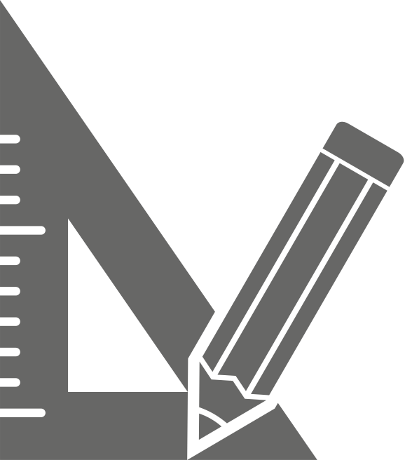
Prepare a practical repair, strengthening or protection solution with a clear technical scope.
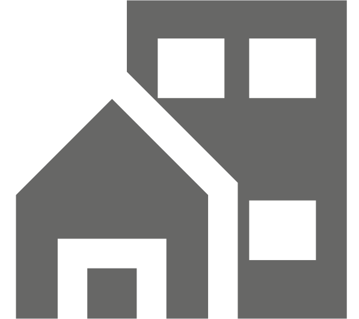
Execute the work with material control, quality checks and final verification.
Power plants, cement plants, silos, chimneys, ports, marine structures and industrial assets exposed to demanding service conditions.
Commercial buildings, residential towers, institutional campuses, corporate facilities and public-use structures requiring assessment, repair or strengthening.
Bridges, flyovers, roads and related transport structures where safety, durability and service continuity are critical.